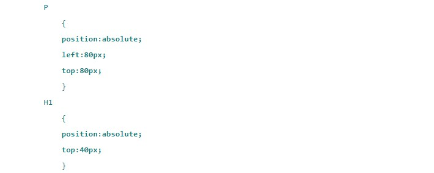

Pozycjonowanie

Za pozycjonowanie odpowiada właściwość position:; Wartości: static-domyślny sposób pozycjonowania, left,right,top,bottom nie działa Element zajmuje całą dostępną szerokość strony. Wysokość elementu jest ustawiona na podstawie jego zawartości. Najmniejsza możliwa wrtość dla której tekst znajduje się w wewnątrz elementu. relative - element ma taki sam wpływ na pozycjonowanie innych elementów na stronie jak przy static left,right,top,bottom przesuwają pozycjonowany element. Przesunięci elementu obliczane jest względem jego lewego górnego narożnika. absolute - element nie ma wpływu na inne elementy, pozostałe elementy zachowują się tak jakby elementu pozycjonowanego nie było w kodzie HTML. Położenie elementu zostaje ułożone na podstawie bieżącego kontekstu. fixed - pozycjonowanie trwałe. Różni się od pozycjonowania bezwzględnego tym, że nie podlega pozycjonowaniu. Pozycjonowanie kontekstowe względnie-bezwzględnie Dotyczy ono elementów zagnieżdżonych. Rodzic - position:relative; dziecko - position:absolute;